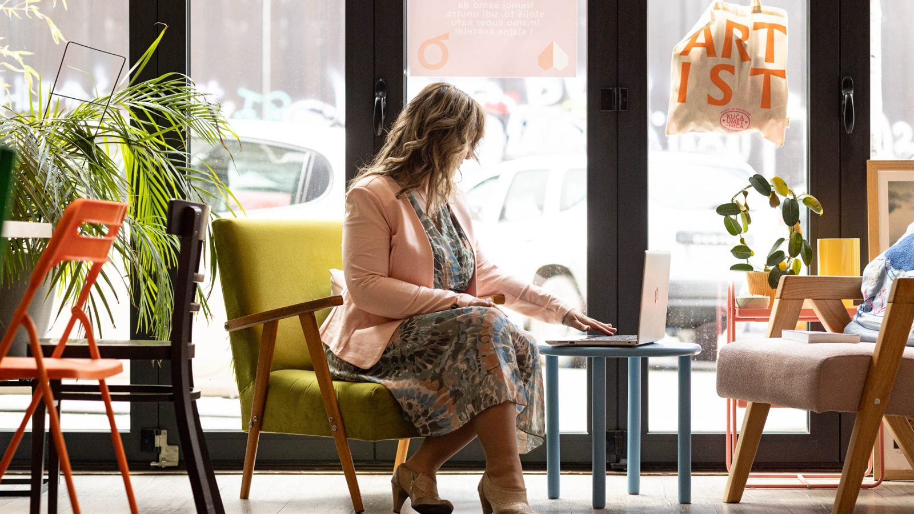

Za samostalan rad
Besplatni psihološki resursi
Verujem da kvalitetna psihološka podrška treba da bude dostupna svima. Ovde možete pronaći besplatne vodiče, vežbe i materijale koji vam mogu pomoći da bolje razumete sebe i napravite prve korake ka promeni.

Materijali
Šta možete preuzeti
Izaberite materijal koji vas zanima i kliknite na dugme i popunite kratku formu, a ja vam ga šaljem na e-mail. Bez prijave i bez liste za slanje.
-
Vodič · 6 strana
Vision Board
Vizuelna mapa života koji želite da stvorite: priprema, postavljanje namere i izrada, korak po korak.
-
Vodič · 7 strana
Kako govoriti bez gubitka sebe
Sokratovski govor, granice kroz reči i vežbe za jasniju komunikaciju, čak i u zahtevnim razgovorima.
-
Vodič · 8 strana
5 jezika ljubavi
Kratak test koji otkriva kako najčešće dajete i primate ljubav: reči, vreme, pokloni, usluge ili dodir, uz tumačenje rezultata.
-
Vodič · 10 strana
Zašto ostajemo tamo gde nas boli?
Vodič za prepoznavanje toksičnih obrazaca u vezi, razumevanje sopstvenih reakcija i prve korake ka zdravijim izborima.
-
Vodič · 8 strana
Visoka senzitivnost
Kako razumeti svoju osetljivost, zaštititi energiju i pretvoriti senzitivnost u snagu, uz D.O.E.S. model.
-
Vodič · 10 strana
Zdrava empatija
Kako ostati uz druge bez gubitka sebe: razlika između empatije i preuzimanja tuđeg tereta, uz vežbe i primere rečenica.
-
Mini priručnik · 9 strana
Strah ili intuicija?
Kako da razlikujete unutrašnji alarm od unutrašnje jasnoće: četiri koraka, četiri vežbe i sedmodnevno posmatranje.
Vaši podaci se koriste samo za dostavljanje materijala. Više u politici privatnosti.
Kako da koristite materijale
Materijali su namenjeni samostalnom radu i ne zamenjuju psihoterapiju niti lekarsku pomoć. Uzmite iz njih ono što vam koristi i ostavite ono što vam u ovom trenutku ne odgovara.
Ako tokom rada primetite da vam je teško da nastavite sami, to nije neuspeh, to je znak da bi razgovor pomogao.